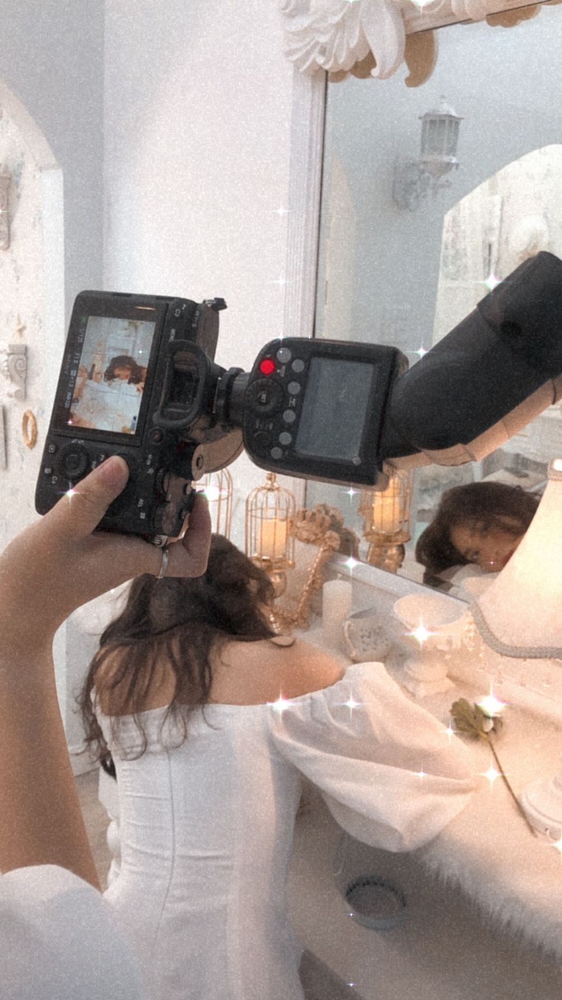
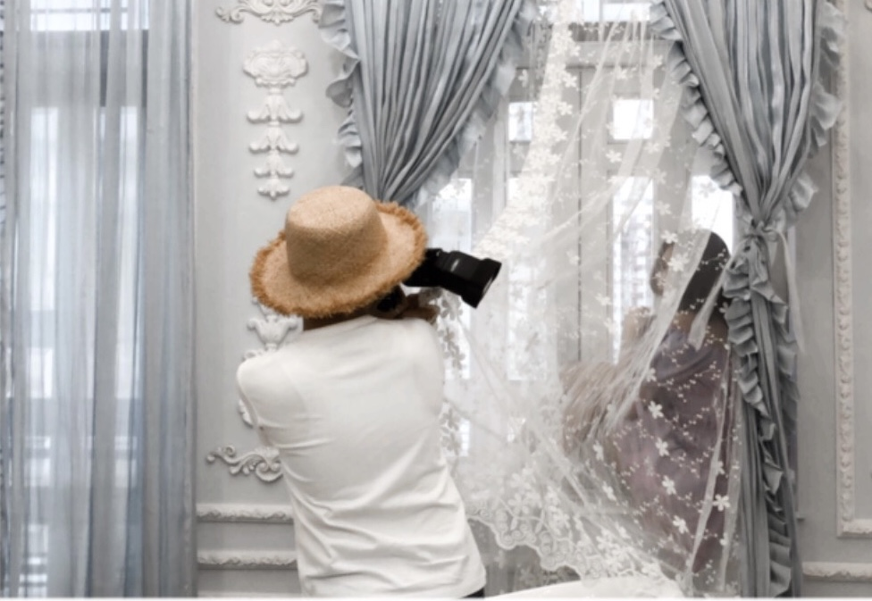

It can be said I’m very lucky when working with my team “heart” in Making media. It was a wonderful experience for semester 1.
In high school, teamwork is a rare activity. Everyone has a tendency to do activities, assignments, and homework by themselves so the teamwork skill is quite limited.
When I go to RMIT university, I am very nervous about teamwork. I do not have any skills as well as the confidence to work with other people. When I accidentally meet Uyen, Minh Anh, and my brother- Khanh, I am attracted by their passion and talent. We talked to each other and decided to be a team “heart”. And this is a time I have changed a lot.
Honestly, before, I did not have a particular study plan, so my assignments keep piling up which drives me crazy. However, when I work in a team, my bad habit has been changed. I wrote a timetable about what time I spend on my study in a day. Besides, I know how to prioritize important jobs like meeting the team by finishing my self-study before the day meeting. Another thing I have changed is my unconfident. I always think that my idea is not as interesting as others so, in meeting the team, I just keep quiet. That makes my teammates not satisfied and urges me to express my opinion. They said that they do not judge my ideas as of right or wrong, they appreciate all member's enthusiasm for comments. Thanks to this, I am confident to express my opinion to my teammate, and receive many parise.
Last but not least, I have learned to be a good listener. When working in a team, I care about other feelings than before. When they feel bad, I am willing to encourage them, listen to their story and give them advice. Therefore, our relationship is good, we more and more understand each other.
In short, working in a team is an awesome experience in my life. My friends- my teammates have helped, encouraged me to be more confident, happier. Now, we become best friends and always confide in everything in life. They actually are my behaviors at the time I live far from my family. And I realized that I have changed in a positive way, making an effort to complete myself, and have to be better each day.

I have a hobby of looking at the night sky when I'm tired, perhaps to understand that this sky is still huge and that my sadness today is small. It also reminds me that we are all the stars that always shine in our own lives. Van Gogh's "Starry Night" painted in me the miraculous feelings that were hard to put into words. The painting is a set of mesmerizing swirling celestial bodies, stylized stars, a shining moon, an idyllic village, and a towering royal tree. It is the contrast between the bright light of the sky and the sadness of the roofs, the image of the royal tree is like the soul of the artist, strong but gloomy with dark blue, the top of the ape comes to the light, though fragile but hopeful. The chaotic spiral of color seemed to emit a magical sound of imagination like a chaotic flow of emotions that were hard to say.
How many times has our life been like that? Looking up at the night sky to let the flow of time pass through your mind so that the dissatisfaction and delusions that have failed before that harsh life have a chance to vanish. To make our souls torn to pieces, scattered all over the space, let alone in the wind but clouds of the sky.
Perhaps, it taught me a lesson of hope. The stars flow along the way of life like a spiral band, our life often struggles and struggles, but in the end, we still shine like a star in its own way. These stars will remain unchanging forever, as faith does not cease in hope and miraculous rise arising from the very mind of man.
"Starry night" really helped me a lot at this moment. When I received NN marks, I thought about going back to my hometown. But when I look at Van Gogh's painting, a glimmer of hope flashes through me. I think the decision to step into this busy modern city is not easy, if just because of a temporary failure, I throw everything away, return in the protective arms of my parents, it proves that I am weak. So what I need to do right now is get up and fight.
When the pandemic rages today and the human future becomes a question mark, that hope must return -for mankind to be empowered to wish for a brighter, better future.
The Starry Night' n.d, Wikipedia, wiki article/entry, viewed 3 October 2020, <https://en.wikipedia.org/wiki/The_Starry_Night>.
I t can be said that my talent is the modelling photos. I fell in love with this job when I happened to meet the owner of the clothing shop during the 10th-grade concert organized by my school. At that time, she offered to invite me to model photos for her shop. At first, although I enjoyed taking pictures a lot, I was a bit shy because part of me was not inexperienced, part of me was not very confident in myself. But when receiving her enthusiastic encouragement, I decided to give it a try. It was my decision that made me who I am today.
Since then, I have received more jobs, I am more confident, and love myself a lot.Thanks to these jobs, I have earned a bit of income to buy and give my loved one's lovely gifts.
Next, it was my 18th birthday. the makeup sister and the photographer are the two closest to me. They secretly prepared a surprise birthday present for me - an 18th birthday album. First, they pretended to have an important job in Saigon so they flew from Hue, my hometown, to Saigon. At first, they said there was a clothing shop that asked them to take pictures and invite me to model, so I agreed. But unexpectedly, they created a photo album for my birthday. I am really touched! They bought clothes by themselves, chose a studio that suited my taste, which made me speechless. Looking at the behind-the-scenes photos, I feel cute and love them even more. Really, sticking to this modeling profession, this is the most precious gift! This is a great decision for me to stick with and meet such good friends!
Talking about my modeling memories, there are 2 occasions that make me remember the most.First, it is the memory of Thien An hill. I and Bo, a well-known photographer in my city, went up the hill to take pictures for Ly Ly clothes shop. That day, it was really beautiful. June sunlight shines through each leaf, creating beautiful light trails. I feel my soul relax after hard days of study. The sound of cicadas signaling the coming of the summer, together with the light breeze, creates a picture of nature that moves people. Really an interesting experience!.
Next, it was my 18th birthday. the makeup sister and the photographer are the two closest to me. They secretly prepared a surprise birthday present for me - an 18th birthday album. First, they pretended to have an important job in Saigon so they flew from Hue, my hometown, to Saigon. At first, they said there was a clothing shop that asked them to take pictures and invite me to model, so I agreed. But unexpectedly, they created a photo album for my birthday. I am really touched! They bought clothes by themselves, chose a studio that suited my taste, which made me speechless.
L ooking at the behind-the-scenes photos, I feel cute and love them even more. Really, sticking to this modeling profession, this is the most precious gift! This is a great decision for me to stick with and meet such good friends!
 
RMIT University gives me a great chance to study media subjects in my first sem. In 3 months, I have learned a lot of things through subjects, teachers, classmates, and various types of learning. In the first semester, I have learned a subject named: Making media. It is really an interesting subject including 3 assignments: podcast, magazine and creating a website. It has blown a new wind in my learning journey. Honestly, I never tried to do these assignments before because my teachers in high school did not teach them. However, thanks to my teacher- Justin, my team “heart” and my effort, I can complete this subject successfully. Now, I am happy to share with you about my course.
When I come to class on the first day, I am very surprised when I see the series of modern Apple computers. This is the first time I can use a computer with a big screen at a university like that!. Next, my school also instructs students on how to make use of the equipment and facilities provided by the school such as cameras, speakers, recording studios, homework orientation sessions, and shared talk shows of talented people. That helped me a lot in podcast and magazine articles. Therefore, I feel very excited when studying with good support so I told myself to study harder. Furthermore, I am impressed by my teacher- Justin. He is very cheerful and humorous but equally passionate and responsible. During his classes, he gave his lectures very carefully and completely, making me understand the lesson immediately without asking again. Especially, once I mailed him on Sunday about my website, he was very enthusiastic in replying in a short time. Even though I texted him during the weekend, he still felt free from trouble and answered my questions as quickly as possible so that I wouldn't worry. That makes me even more precious.
Last but not least, with the high score of the podcast and magazine, it is not only my efforts, but it is also corporate of everyone in a team. My team is named “Heart” including Minh Anh, Uyen, and Gia Khanh. I - the shy and quiet member of the group - have been helped by them to change. Everyone encourages me to give my opinion, it doesn't matter whether it is wrong or right, the most important thing is the enthusiastic and enthusiastic attitude in the group, helping the group to become the most successful exercise. Now, I am confident to say: I am truly an enthusiastic member of the team and have a team spirit!
In short, thanks to big support from RMIT, teacher Justin and my team, I can change positively, I became a harder and more responsible learner.
Participating in the Making Media class is really a useful experience. Because I can learn a lot of things, from using modern school equipment to podcasting, magazine and website skills. In particular, my team spirit is getting bigger, more and more I appreciate it and it really helps me in my future subjects.
I believe that these experiences will help me a lot in the future. Firstly, Magazine skills can help me create reliable information to communicate products to customers. Also, website skills can support me to build a good background to persuade the manager to hire. And the last, when I know about it, I can take advantage of my experience working in a team applying to other teams in other subjects in sem 2. Moreover, When I do an internship in the future, teamwork is required very high. Therefore, when I am good at working in a team, it can be seen that I am a responsible person and I can win the hearts of my colleagues.
In conclusion, joining the Making Media class is a wonderful experience Now, I can confidently say: I can make media well!.
created with
HTML Website Builder .